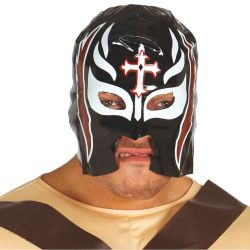
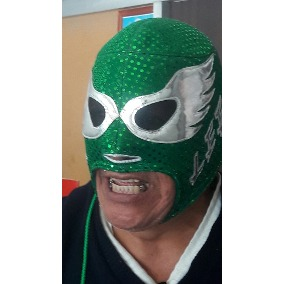
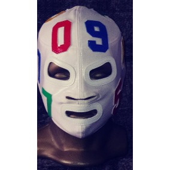
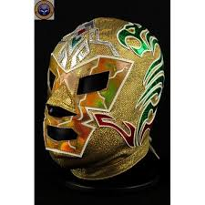

| Llaves | Lucharesu |
|---|---|
| contempla el uso de complejas sumisiones para obligar al rival a rendirse y de intrincadas variantes de pinfall para realizar un conteo rápido al oponente antes de que pueda impedirlo, frecuentemente alternando entre ambas variantes. En este estilo en particular se confía más en la eficacia de la técnica de pinfall que en la contundencia de un movimiento previo, y es muy común encontrar largas secuencias de reversiones protagonizadas por dos luchadores intentando atrapar al otro contrarrestando sus llaves. | Debido a que muchos luchadores japoneses han completado su entrenamiento en México, éstos han influenciado a algunos luchadores mexicanos y viceversa, creando una mezcla de lucha libre mexicana y puroresu llamada lucharesu. Mientras que la lucha libre mexicana acostumbra a ser técnica y meditada, el puroresu contempla un estilo más veloz, elástico y con rasgos de artes marciales, y una mezcla de ambos estilos ha sido adoptada por varios luchadores mexicanos y japoneses por igual. |
| Pinfall / Conteo | Rendicion | Knockout | Cuenta Fuera | Descalificación |
|---|---|---|---|---|
| Consiste en apoyar los hombros del oponente contra la lona durante tres toques del árbitro. | Una victoria conseguida al hacer rendirse al rival, lo que es expresado verbalmente o, más comúnmente, por tap out. | Victoria por inconsciencia del rival. Esto no es muy común en la lucha libre mexicana. | Un luchador pierde si permanece demasiado tiempo fuera del ring, determinado por una cuenta de 20 por parte del árbitro. | Cuando un luchador es declarado perdedor por no respetar las normas. |
| Confeccionadas con esponja | Mascaras oficiales | Mascaras semiprofesionales | Mascaras profesionales |
|---|---|---|---|
| Estas brindan al luchador una manera fácil y sencilla de mantener el anonimato con un costo accesible. | Estas cuentan con el sello particular de cada luchador, es decir su diseño propio. | Estas se diferencian de las oficiales debido a que no se usan en el cuadrilítero, sino que son exclusivamente para exhibición. | Estas son las que el luchador emplea en sus duelos debido a su diseño, ya que sus costuras son reforzadas en boca y ojos los cuales aumentan su resistencia y durabilidad. |
|  |  |  |  |